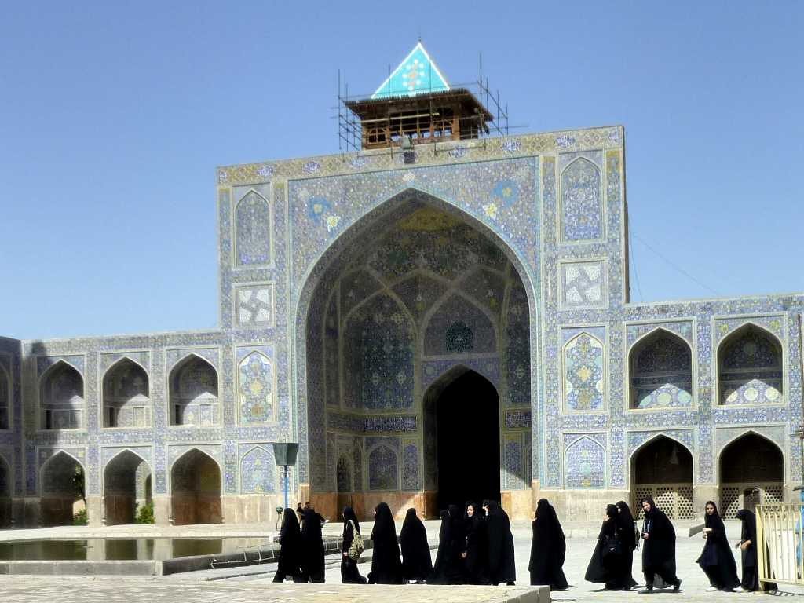
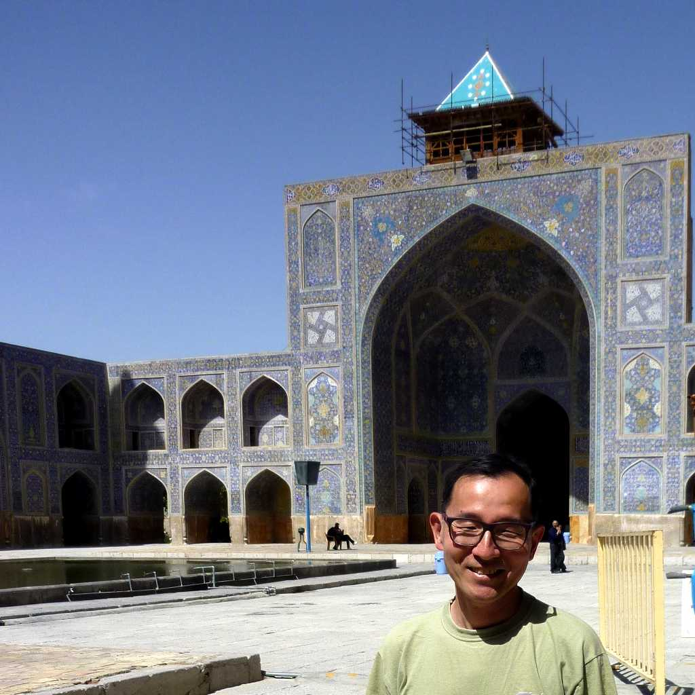
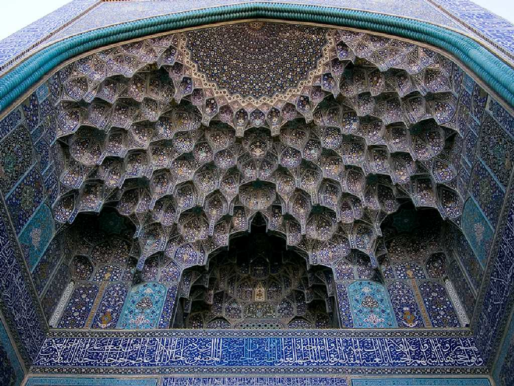
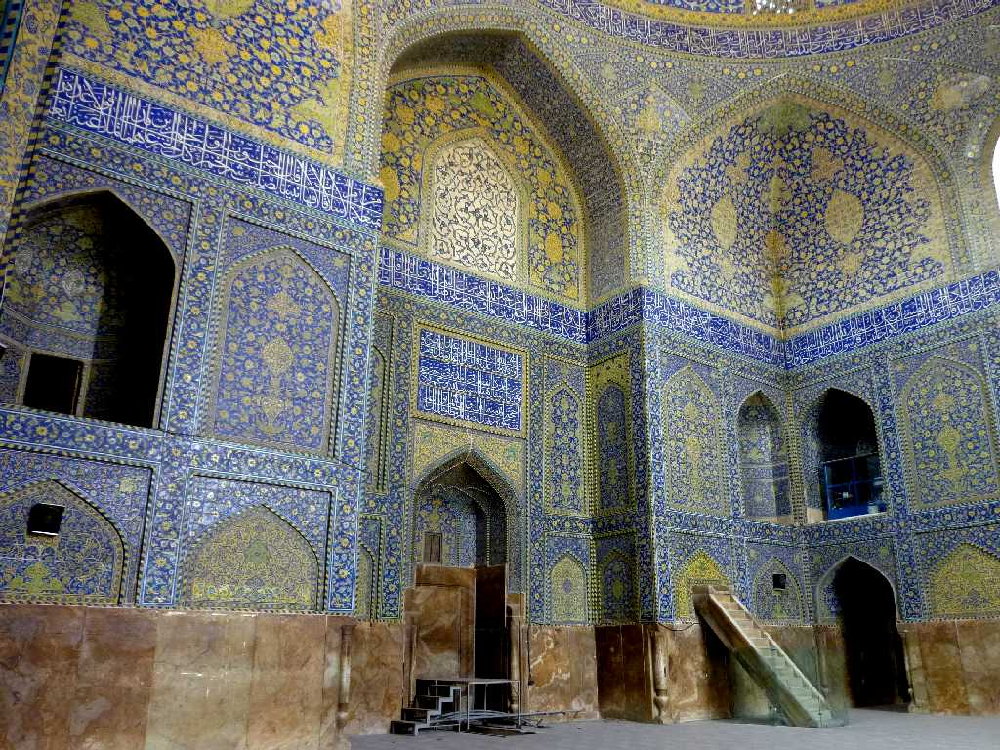

Imam Mosque Isfahan
絶頂期を迎えたサファヴィー朝のアッバース１世が１５９８年首都をイスファハンに移し１６１２年から１６３０年に創建したイスラム建築を代表する壮大で華麗なモスク

April 11 2010 Imam Mosque Isfahan

Muqarnas
入り口のイーワーンの鍾乳石を模したムカルナスと呼ばれる飾りがすばらしく言葉を失う

Mihrab
アラベスク模様のタイルに囲まれたミフラーブはメッカの方向を向いているため入り口から４５度程曲がっている